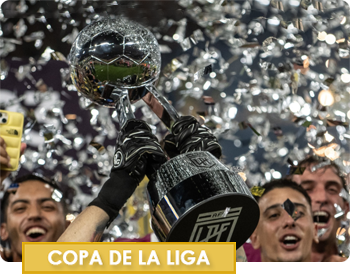

HAT-TRICK Y RIVER CLASIFICA COMO PRIMERO DE GRUPO
Con un hat-trick de Colidio, River se lo dio vuelta a Instituto y clasificó primero en la Zona A. El Millonario le ganó 3 a 1 a la Gloria, en condicion de visitante, por la fecha 14 de la Copa de la Liga y selló su pasaje a los cuartos de final. El equipo de Núñez culminó en lo más alto, con 27 puntos y se enfrentará al cuarto puesto de la Zona B.

CUARTOS DE FINAL: Cruces, resultados y llave del torneo
El 2024 del fútbol argentino empezó con la disputa de la Copa de la Liga, que avanzó con un calendario bastante acelerado y ya está por conocer a sus clasificados a la etapa de playoffs en la que se consagrará al campeón.
LOS CUARTOS TIENEN SEDE, FECHA Y HORA
La Copa de la Liga entra en su fase final y la Liga Profesional de Fútbol confirmó este miércoles la programación y las sedes de los cuartos de final, que incluyen un Superclásico.
El día sábado habrá tres encuentros: en el primer turno, Defensa y Justicia jugará con ...